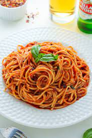

Welcome to Joy Recipes!
Recipe of How to Cook Spaghetti

Ingredients:
- 1 onion
- 2 Tomatoes
- 2 shoaves of garlic
- Corriander
- Spaghetti
- Water
- Salt
- Draining bowl
- Oil
- 2 sufurias
- Stirring stick
Recipe:
- Boil water in a sufuria.
- Put the spaghetti in the boiling water and let it boil for around 5-7 minutes.
- Add salt to taste
- Drain the excess water in the spanghetti into a separate bowl and leave the spaghetti to cool down.
- Cut the onion, tomatoes, garlic and corriander and put them in sepatate bowls.
- Put another sufuria on the stove.
- Put some oil on the sufuria and let the oil heat up.
- Once the oil is heated up, put in the onions and fry them until they are golden brown.
- Put the tomatoes and garlic and let them cook well.
- Add the spaghetti into the sufuria and mix well with the tomatoe paste.
- Add the drained water from the spaghetti according to your preference.
- Add the corriander and simmer for 3 minutes.
- Serve the food while hot.